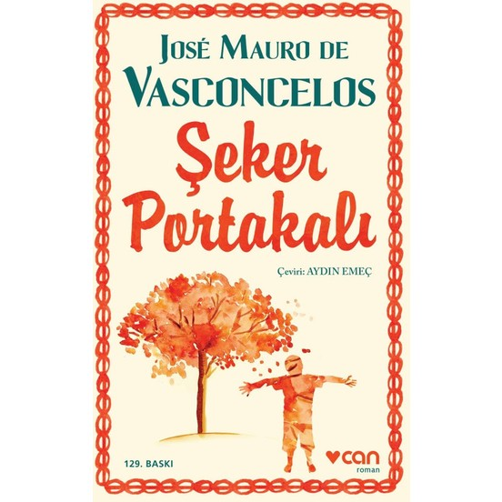

Tuğba Denis Bayraktar
Hakkımda
Merhaba. Ben Tuğba Denis Bayraktar! Eskişehir'de yaşıyorum. Kitap okumayı ve uzun doğa yürüyüşlerini çok
seviyorum. Web geliştirme ile ilgileniyorum. Kodluyoruz'un bu eğitim serisi sayesinde harika şeyler öğrendim ve
öğrenmeye devam ediyorum! Siz de aramıza katılın!
Sevdiğim Kitaplar

Şeker Portakalı: Brezilyalı yazar José Mauro de Vasconcelos'un tüm dünyayı etkisi altına almayı başaran 1968
tarihli dram ve çocukluk romanıdır.
Roman, Brezilya'nın Minas Gerais bölgesinde yaşayan fakir bir ailenin beş yaşındaki oğlu olan ve hayal gücü çok
gelişmiş olan Zeze adlı bir çocuğun başından geçenleri konu edinir.